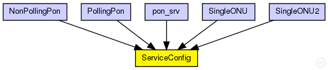
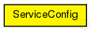

This documentation is released under the Creative Commons license
This documentation is released under the Creative Commons licenseA module to keep track of multi-service scenarios. Here we register the services available, the priority of each service and any other needed information. Since we are working with VLANs - we map traffic from various technologies into different vlans - we are going to register this too. Finally for the access network we have a per client/flow configuration. This is the MSR (Maximum Sustained Rate) used mainly in WiMax modules.
The following diagram shows usage relationships between types. Unresolved types are missing from the diagram. 
The following diagram shows inheritance relationships for this type. Unresolved types are missing from the diagram. 
| NonPollingPon (network) | (no description) |
| PollingPon (network) | (no description) |
| pon_srv (network) | (no description) |
| SingleONU (network) | (no description) |
| SingleONU2 (network) | (no description) |
| Name | Type | Default value | Description |
|---|---|---|---|
| services | string | "DATA" |
Service Names (whatever you like here) |
| srvPrior | string | "1.0" |
Service priority. Total sum must be 1 |
| vlanMap | string | "0" |
Vlan map |
| msrPerFlow | string | "1000000" |
MSR per flow, default 1Mbps (-1 = Unlimited) |
| mrrPerFlow | string | "1000000" |
MRR per flow, default 1Mbps (-1 = Unlimited) |
| Name | Value | Description |
|---|---|---|
| display | i=block/classifier |
// // A module to keep track of multi-service // scenarios. Here we register the services // available, the priority of each service and // any other needed information. Since we are working // with VLANs - we map traffic from various // technologies into different vlans - we are // going to register this too. Finally for the access // network we have a per client/flow configuration. // This is the MSR (Maximum Sustained Rate) used mainly // in WiMax modules. // simple ServiceConfig { parameters: string services = default("DATA"); // Service Names (whatever you like here) string srvPrior = default("1.0"); // Service priority. Total sum must be 1 string vlanMap = default("0"); // Vlan map string msrPerFlow = default("1000000"); // MSR per flow, default 1Mbps (-1 = Unlimited) string mrrPerFlow = default("1000000"); // MRR per flow, default 1Mbps (-1 = Unlimited) @display("i=block/classifier"); }
This documentation is released under the Creative Commons license